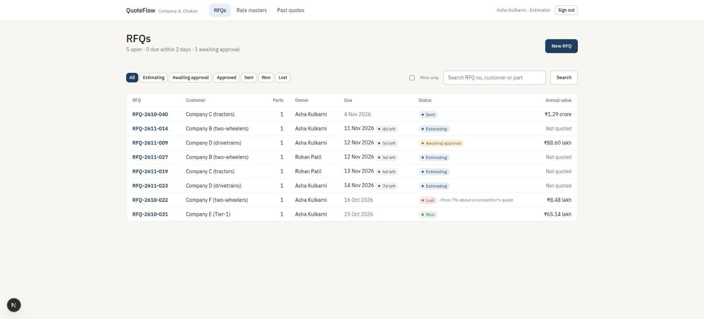
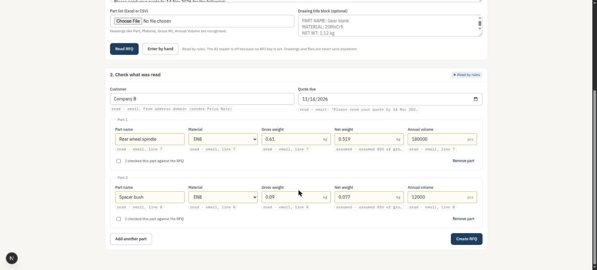
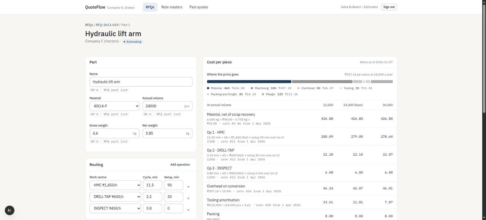
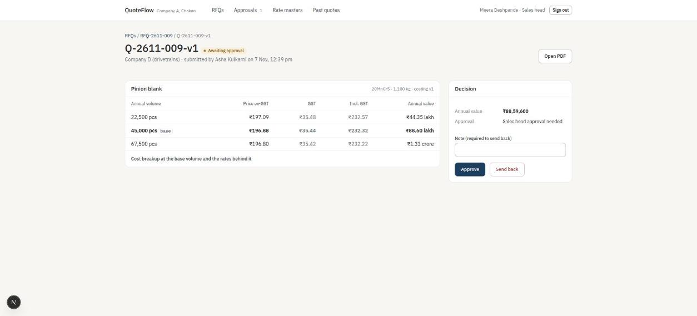
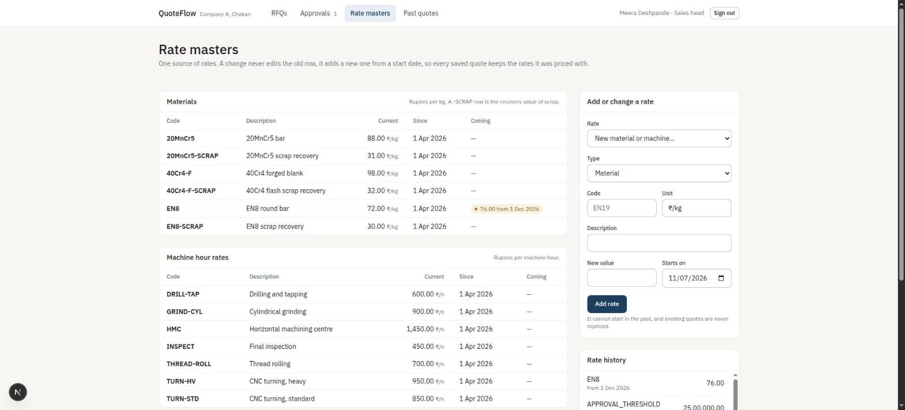

Technical Design Document for problem 5: RFQ-to-quote costing web app for an auto-component maker.
An estimator opens an RFQ whose part details are already filled in, finishes costing in minutes, and the sales head approves large quotes. Rates come from one master with start dates, so each saved quote keeps the exact rates it was priced with. The brief's core build slice works end to end on seeded sample data:
| Core build item | What exists |
|---|---|
| RFQ register | Due dates with "days left" badges, owners, status (estimating, awaiting approval, approved, sent, won, lost with reason), filters, search, annual value. |
| Part costing screen | Material and scrap, routing with cycle and setup times, overhead, tooling, packing, freight, margin, priced at 2 or 3 volumes, live as you type, with each line's formula shown. |
| Rate masters with effective dates | Append-only rows, "coming" rates shown, no back-dating. Saved costings store the rate rows they used. |
| Approval | Quotes above ₹25 lakh a year need the sales head. The submitter cannot approve their own quote. Send-back needs a reason. |
| PDF quote | Prices at every volume, GST separately, full cost breakup, approver and date. |
| AI: RFQ intake | Reads a pasted email, an Excel/CSV part list and a pasted drawing title block. Every value carries its source and waits for the estimator's OK. |
| Roles | Estimator and sales head, enforced on the server. |
Beyond the slice I added: routing suggestions from the most similar past part, a "where the price goes" bar on the costing screen, a rate stamp on every cost line, past-quote search and Excel/CSV import (tested at 1,400 rows), quote versions that supersede each other, and an activity log per RFQ.
| Choice | Why | Trade-off accepted |
|---|---|---|
| One Next.js app (App Router, TypeScript) | One deployable, server-rendered desk screens, and one shared costing engine that runs in the browser for live preview and on the server as the authority. | No separate API for other clients. Fine for an internal desk tool. |
| Postgres, plain SQL, no ORM | Money and approvals need transactions and constraints. The schema is small, so SQL in one file is easier to review than an ORM layer. jsonb holds immutable costing snapshots. | Hand-written queries; types are asserted at the boundary, not generated. |
| Costing as pure functions | No I/O, no clock, no AI: the same inputs always give the same price, which makes it testable and explainable. | New cost elements need a code change, not configuration. |
| Own sign-in (bcrypt, signed httpOnly cookie) | Named users only, two roles, no third-party dependency. The user row is re-read on every request, so removed users lose access at once. | No SSO, MFA or password reset. Listed under "next". |
| Plain CSS with design tokens | The client asked for restrained, minimal design. No UI kit means nothing on screen that lacks a purpose. | More CSS to maintain. |
| Table | Holds | Rule it enforces |
|---|---|---|
users | Email, name, role (estimator or sales_head), bcrypt hash | Role is a check constraint. |
rfqs | RFQ no, customer, received and due dates, owner, status, loss reason, source email | A lost RFQ must have a reason. |
parts, routing_ops | Part inputs (material, weights, volume, tooling, packing, margin, tiers) and its operations | Net weight cannot exceed gross. sources records where each pre-filled value came from and whether it was accepted. An operation may carry suggested_from. |
rate_items | Material, work-centre and parameter rates, each with effective_from | Append-only. Unique on (kind, code, date). The rate on a date is the latest row on or before it. |
costings | Version, pricing date, inputs, full result, and the rate rows used | Immutable snapshots. Unique on (part, version). |
quotes, quote_lines | Quote version, status, annual value, who submitted and decided; the costing used for each part | A quote points at costing ids, so it can always be explained from its own rates. |
activity | Who did what, when, to which RFQ | Written in the same transaction as the change. |
past_parts | Previously quoted parts with their routing | Feeds search and routing suggestions. |
All maths is in src/lib/costing.ts. It is pure, and it is the only place a price is computed. For a part at annual volume V:
Volume changes the price through setup and tooling spreading over more or fewer pieces, so three tiers give three prices. Every leaf amount is rounded to 2 decimals and everything above is a sum of rounded leaves, so a printed breakup always adds up exactly. Missing rates raise an error naming the missing code, instead of pricing at zero. Each cost line also records the ids of the rate rows it used, and the screen prints them as a rate stamp (for example rate #9 from 1 Apr 2026), so every figure can be traced to the master.
| Line | Working | ₹ per piece |
|---|---|---|
| Material net of scrap | 0.610 kg × 72.00 − 0.090 kg × 30.00 | 41.22 |
| Op 1 turning | 3.2 min ÷ 60 × 850/h + 45 min setup over a lot of 15,000 | 45.38 |
| Op 2 thread rolling, Op 3 inspection | 0.9 min at 700/h, 0.4 min at 450/h, with setup | 10.52 + 3.00 |
| Overhead | 58.90 × 15% | 8.84 |
| Packing, freight | 1.80; 0.610 kg × 3.50 | 1.80 + 2.13 |
| Cost | 112.89 | |
| Price ex-GST at 12% margin | 112.89 ÷ 0.88; GST 23.09; incl. GST 151.37 | 128.28 |
| Annual value ex-GST | 128.28 × 1,80,000 | ₹2,30,90,400 |
The 3.2 minutes and ₹850/h are the brief's sample row. The other numbers are assumptions (section 9).
A rate is never edited. Changing EN8 adds a row with a start date, and the engine picks the latest row on or before the pricing date. When a costing is saved, the result and the exact rate rows used (id, value, start date) are stored with it, and the quote points at that costing. So an old quote is explained by its own rates, however the master changes later. A new rate cannot start in the past, so history cannot be rewritten. Tests cover: the old and new price on either side of a start date, a rate that starts after the pricing date being ignored, and a saved costing staying unchanged after a new rate is added.
While a quote is waiting or sent, the RFQ is locked: parts, routing and costing cannot change under it.
The AI never touches cost maths. It only pre-fills inputs, and a person accepts them.
src/lib/extract.ts)The client asked for minimal design that counts as much as features, and for a dense but calm costing screen. The direction is a drawing office: paper, ink and exact numbers. The system is one warm off-white surface and one ink-blue accent. Type is IBM Plex Sans, with Plex Mono for figures, formulas, ids and rate stamps. Spacing sits on a 4px grid, weights are 400 and 500, and rules are hairlines with no shadows or decoration. Colour is only used where it means something: amber for waiting, green for good, red for lost, and the accent for the action and for the biggest share of a price. Every screen has a loading skeleton, an empty state and an error state, and the layout stacks on a phone with no page-level horizontal scroll (tables scroll inside their card).





48 automated tests (npm test): 19 on the costing engine (hand-worked prices, rounding, tiers, effective dating, validation, the approval boundary, line-to-rate traceability, price composition), 14 on extraction (number, date and material parsing, email, Excel, title block, and the mocked LLM paths), and 15 on the services against a real Postgres (the approval workflow, locks, acceptance rules, rate rules, similarity ranking, RFQ numbering, and a 1,400-row import). One test is a regression for a bug I found by using the app: a saved costing showed "out of date" because Postgres reorders JSON keys.
| Area | What is in place |
|---|---|
| Secrets | None in the repository. .env is ignored, .env.example holds names only. In development the session secret is random per process; in production the app refuses to start without SESSION_SECRET. |
| Access control | Sign-in required on every page, action and the PDF route. Roles checked on the server for approval and rate changes. The approvals page is hidden from estimators. The user is re-read from the database on each request. |
| Input validation | zod at every server action, plus database constraints (checks, uniqueness, foreign keys) as the last line. All SQL is parameterised. Uploads: .xlsx or .csv only, 2 MB, row-capped. |
| Sessions and sign-in | httpOnly, SameSite=Lax, Secure in production, 8 hours. bcrypt with a dummy comparison for unknown emails. 8 attempts per 15 minutes per email. |
| Other | Next.js checks the origin of server actions. Security headers: nosniff, frame deny, referrer policy, permissions policy. Four-eyes on approval. |
The brief gives part, material, gross weight, volume, cycle time and hour rate for three parts, and nothing else. Everything below is mine, and is seeded as editable data, not hard-wired.
| # | Assumption |
|---|---|
| A1 | Cost formulas as in section 4. The brief lists the elements but not the formulas. |
| A2 | Overhead is 15% and applies to conversion (machining) cost only, not to material. |
| A3 | Margin is a percentage of the selling price, default 12% (taken from the brief's contribution figure). It is editable per part. |
| A4 | A production lot is one month of annual demand, so setup is spread over V ÷ 12. Tooling is spread over 3 years of volume. |
| A5 | Freight is ₹3.50 per kg of gross weight. Packing is a per-piece input (₹0.60 to ₹8 in the demo data). |
| A6 | GST is 18%, one rate, shown separately. HSN-specific rates are not modelled. |
| A7 | Material rates: EN8 ₹72/kg (scrap ₹30), 40Cr4 forged blank ₹98/kg (scrap ₹32), 20MnCr5 ₹88/kg (scrap ₹31). Market-like guesses. The ₹76 EN8 rate from 1 Dec is a demo of a scheduled change. |
| A8 | Hour rates for turning (₹850), heavy turning (₹950) and the horizontal machining centre (₹1,450) come from the brief's sample rows. Drilling, thread rolling, grinding and inspection rates are assumed. |
| A9 | The brief gives one cycle time per part. I use it as the first operation and add assumed follow-on operations and setup times (for example thread rolling and inspection) so the routing is realistic. |
| A10 | Net weights (0.52, 3.85, 1.12 kg) are assumed, since the brief gives gross only. The intake reader assumes 85% of gross when none is given, and says so. |
| A11 | The lift arm has ₹8.5 lakh of forging die tooling. Other parts have none. |
| A12 | The approval limit is measured on annual value, ex-GST, at the part's annual volume, summed over the RFQ. "Above ₹25 lakh" means strictly above. |
| A13 | Quotes at or below the limit approve themselves ("within estimator authority"). The submitter can never approve their own quote. |
| A14 | Quotes are valid for 30 days. Sending is mocked and logged. |
| A15 | Only the sales head changes rates. The plant head is not a separate role in this build. |
| A16 | The demo holds 140 generated past parts, not the real 1,400. The import accepts headings I guessed (Part, Material, Gross Wt, Annual Volume, Price, Date, Outcome, Quote ref). |
| A17 | "Similar part" means same material, close weight and shared name words (section 6). |
| A18 | The PDF prints "Rs." because the built-in PDF fonts have no rupee sign. The screens use ₹. |
Cut, on purpose:
Next, in order: